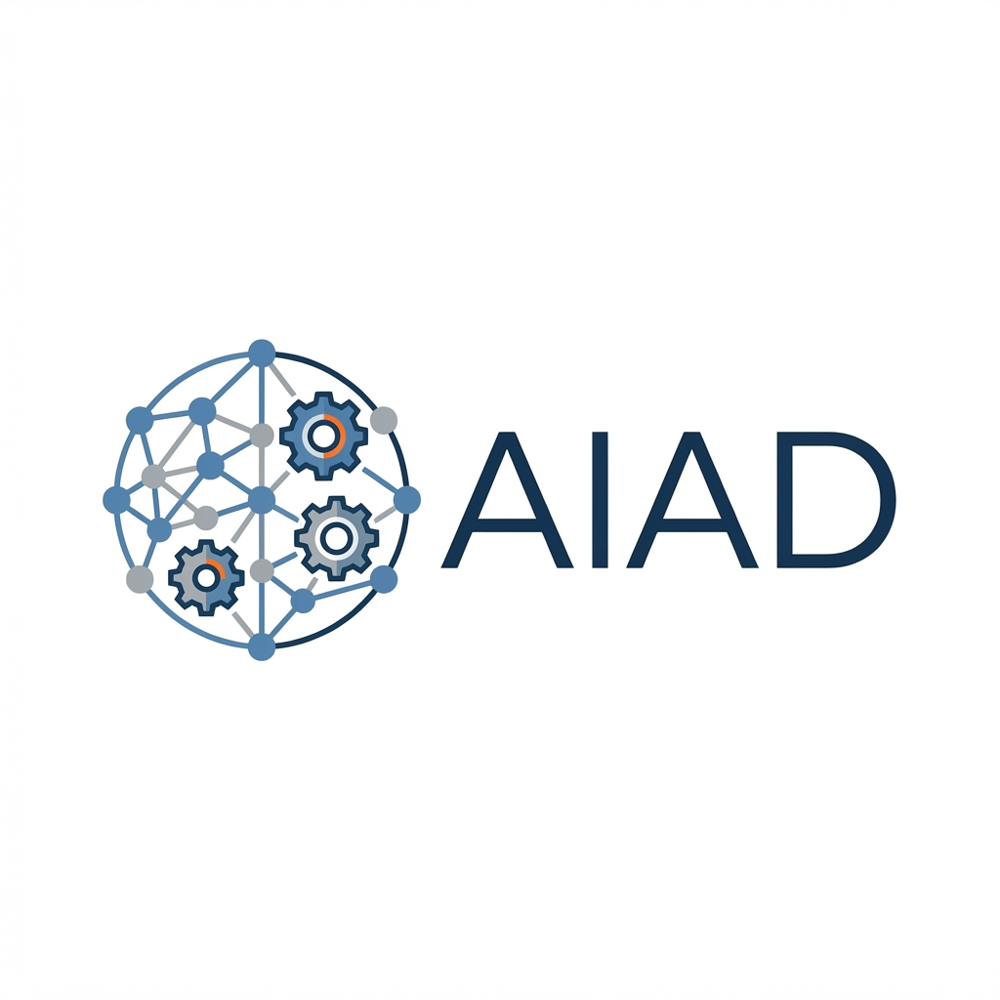

このカリキュラムの最終目標は、G検定範囲を自分で理解するだけでなく、部署メンバーへ説明できる水準にすることである。本ユニットでは、学んだ知識を人へ伝えるための実務的な整理型を作る。重要なのは、用語を並べることではなく、相手の理解レベルに応じて歴史・構造・用途・注意点をどう並べるかを持つことである。
総合整理③は、知識の暗記ではなく説明技術の整理である。G検定の内容を部署内共有へ使うなら、相手が何を知らないかを踏まえ、短時間で全体像を伝える型が必要になる。
他者へ説明する型は、次の5段階で組むと安定する。①そもそもAIとは何か → ②どう進化してきたか → ③今の主力技術は何か → ④何に使われるか → ⑤使うときの注意点は何か である。これにより、歴史・技術・応用・ガバナンスを一本線で説明できる。
| 段階 | 説明の焦点 | 一言で言うなら |
|---|---|---|
| 1. 定義 | AIとは何か | データやルールから判断・生成を行う仕組み |
| 2. 歴史 | なぜ今こうなったか | ルール中心から学習中心へ進化した |
| 3. 技術 | 今の主力技術 | 深層学習と基盤モデルが中心 |
| 4. 応用 | 業務で何ができるか | 画像・言語・予測・生成などへ広く応用 |
| 5. 注意点 | 何に気を付けるか | 精度だけでなく幻覚・法務・ガバナンスが必要 |
つまり、「同じ知識を誰にでも同じ順で話す」のではなく、共通骨格は維持しつつ強調点を変えるのが実務的である。
AIは、昔はルールで動かしていたが、今はデータから学ぶ深層学習と基盤モデルが中心である。画像・言語・予測・生成に使え、特に生成AIが注目されている。ただし、精度だけでなく幻覚や法務・ガバナンスに注意が必要である。
これに加えて、古典的AI→機械学習→深層学習→基盤モデルの歴史、CNN・Transformer など主要モデル、RAG や RLHF、主要応用分野、倫理・法務まで入れる。
さらに、評価指標、過学習、正則化、強化学習、モデル比較、業界別応用、部署導入時の論点まで含める。
AIは、最初はルールで考えさせようとしたが限界があり、データから学ぶ機械学習へ進んだ。さらに表現まで自動学習する深層学習が広がり、現在は大規模事前学習済み基盤モデルと生成AIが中心になっている。応用は画像・言語・予測・推薦・異常検知など多岐にわたるが、実務では精度だけでなくデータ品質、評価指標、法務・倫理・ガバナンスが重要になる。
ここまでの5ユニットを cap で圧縮し、最後の試験対策用まとめとして仕上げる。